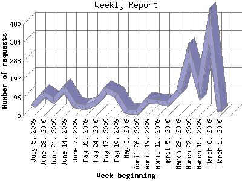

The Weekly Report identifies the activity for each week within the report
time frame. Remember that one page hit can result in several server requests
as the images for each page are loaded.
Note: Depending on the
report time frame for this report the first and last week may not represent
a full seven day week, resulting in lower hits.

| Week beginning | Number of requests | Number of page requests | |
|---|---|---|---|
| 1. | March 1, 2009 | 22 | 22 |
| 2. | March 8, 2009 | 473 | 130 |
| 3. | March 15, 2009 | 139 | 27 |
| 4. | March 22, 2009 | 327 | 55 |
| 5. | March 29, 2009 | 124 | 29 |
| 6. | April 5, 2009 | 64 | 19 |
| 7. | April 12, 2009 | 74 | 26 |
| 8. | April 19, 2009 | 79 | 19 |
| 9. | April 26, 2009 | 19 | 8 |
| 10. | May 3, 2009 | 22 | 11 |
| 11. | May 10, 2009 | 107 | 32 |
| 12. | May 17, 2009 | 137 | 29 |
| 13. | May 24, 2009 | 65 | 37 |
| 14. | May 31, 2009 | 45 | 29 |
| 15. | June 7, 2009 | 53 | 36 |
| 16. | June 14, 2009 | 141 | 48 |
| 17. | June 21, 2009 | 79 | 27 |
| 18. | June 28, 2009 | 115 | 38 |
| 19. | July 5, 2009 | 50 | 19 |
Most active week beginning March 8, 2009 : 130 pages sent. 473 requests handled.
Weekly average: 33 pages sent. 112 requests handled.
This report was generated on July 9, 2009 20:37.
Report time frame March 4, 2009 22:26 to July 9, 2009 07:09.
| Web statistics report produced by: analog 5.1 / Report Magic 2.21 |